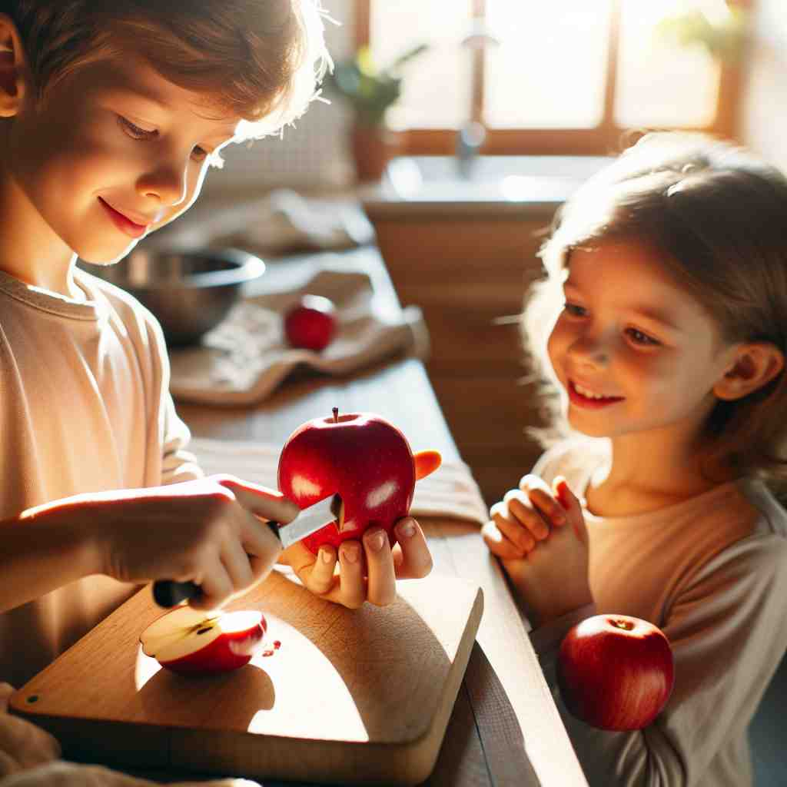

💬 The child wants to cut the apple in half. 孩子想把苹果切成两半。

💬 The person is pouring water to fill half a glass. 那个人正在倒水，直到杯子装满一半。
💬 The child wants to cut the apple in half. 孩子想把苹果切成两半。
💬 The person is pouring water to fill half a glass. 那个人正在倒水，直到杯子装满一半。
🔈 [hɑːf]
💬 I ate half the apple. 我吃掉了半个苹果。
🔍 一半: 假设你有一个苹果，你用刀把它切成两块大小一样的部分，你吃掉其中的一块，你吃掉的部分就是一个苹果的一半。
💬 Half the students in the class are girls. 班里一半的学生是女生。
🔍 一半: 假设你的班上有 10 个学生，其中 5 个是女生，5 个是男生，那么女生数量就是班级学生总数的一半。
💬 The movie is half over. 电影播放到一半了。
🔍 一半: 假设一部电影总共播放 2 个小时，现在已经播放了 1 个小时，那么电影就播放到一半了。
💬 It's half past three. 现在是三点半。
🔍 一半: 时钟走到 3 点之后，又走过了从 3 点到 4 点之间的一半时间，也就是 30 分钟，所以现在是三点半。
🧠 “half” 的核心意思是将一个整体平均分成两份，其中的一份就是“一半”。
⬅️ one-half, a half: 这些词组和 half 的含义相同，都表示“一半”。
🔀 whole（全部）、double（两倍）：'whole' 指的是一个完整的、未被分割的整体，与 'half' 相反。'double' 指的是两倍，是 'half' 的反义词，表示数量是 'half' 的两倍。
🌳 这个词源自古英语 'healf'，表示一半或部分。构成简单且没有复杂的词根、前缀或后缀。
💡 可以通过联想 'half' 的视觉形象，比如一个圆的一半，来直观地记忆其含义。日常生活中常见的 '一半' 例如饼的一半或时间的一半，有助于强化记忆。
🗝️ adv. partly or to some extent 部分地或在某种程度上
🎭 在一个美术课堂上，老师让学生描述一个模糊的画面。一位学生说道：'我觉得它有一半像是一只猫，表明画作只有部分看起来像猫。这展示了'half'作为部分或在某种程度上的含义。
💬 I'm half asleep. 我半睡半醒。
🤔 表示程度达到一半
🗝️ adv. not completely or fully 不完全或不彻底
🎭 在一个寒冷的早晨，一位登山者坐在山顶上，遥望云海。他轻声说道：'我还没完全登顶，这里只是 halfway 表示他还没有完全到达山顶。这展示了'half'作为不完全或不彻底的含义。
💬 The work is only half done. 工作还差一半。
🤔 从一半延伸到不完全
🗝️ n. either of two equal periods of play in some sports 在某些运动中,两段相等的比赛时间之一
🎭 在一个激动人心的足球比赛中，裁判吹响了哨声，宣布上半场结束，队员们纷纷走向场边休息。这展现了'half'作为在体育比赛中两个等时段之一的含义。
💬 The score at the end of the first half was 1-0. 上半场结束时的比分是1-0。
🤔 比赛时间被平分为两半
🗝️ n. half-brother or half-sister 同父异母的兄弟或姐妹 / 同母异父的兄弟或姐妹
🎭 在一个温馨的家庭聚会上，两个孩子愉快地玩耍着。姐姐向她的朋友介绍说：“这是我的 half-brother，虽然我们只共享一位父母，但是我们关系很好。”这展示了'half'表示同父异母或同母异父兄弟姐妹的含义。
💬 They have the same father but different mothers; they are halves. 他们有同一个父亲，但母亲不同；他们是半身兄弟。
🤔 只有一半的血缘关系
🗝️ n. a half-price ticket 半价票
🎭 在一个热闹的电影院门口，一对夫妇正在购票。售票员微笑着告诉他们：'今天是特惠日，所有票只需 half-price！这让他们开心不已。这展示了'half'作为半价票的含义。
💬 Children travel for half on most buses. 儿童在大多数公交车上半价乘坐。
🤔 价格减半